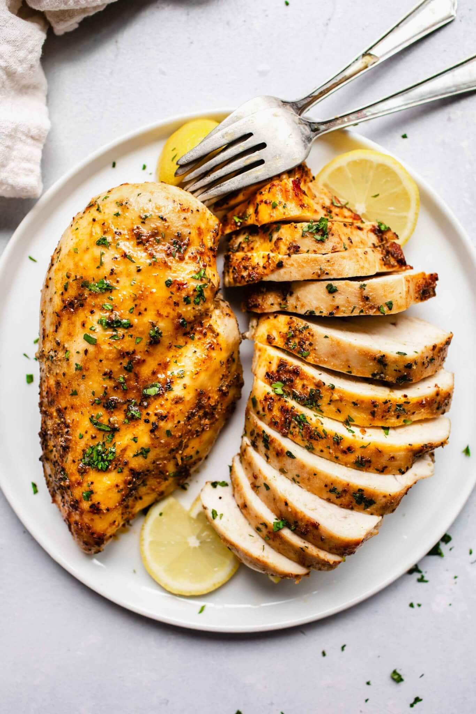

Chicken Breast

Description
This chicken breast recipe will be perfect for hitting that protein macro! Chickn is an amazing low calorie high
protein food, and will help balance any diet.
Ingredients
- 4 (5 ounce) skinless, boneless chicken breast halves
- 2 tablespoons olive oil
- ½ teaspoon coarse sea salt, or to taste
- 1 pinch Creole seasoning (such as Tony Chachere's®), or more to taste
- 1 tablespoon chicken broth, or more to taste
Steps
- Gather all ingredients.
- Preheat the oven to 400 degrees F (200 degrees C).
- Rub chicken breasts with olive oil and sprinkle both sides with salt and Creole seasoning. Place chicken in a broiler pan.
- Bake in the preheated oven for 10 minutes. Flip chicken and cook until no longer pink in the center and the juices run clear, about 15 minutes more. An instant-read thermometer inserted into the center should read at least 165 degrees F (74 degrees C).
- Remove chicken to a plate.
- Pour chicken broth into the pan and scrape any browned bits off the bottom with a flat-edged wooden spatula. Add more broth if needed to dislodge the browned bits, but not too much or it will be watery.
- To serve, drizzle the pan sauce over the chicken.